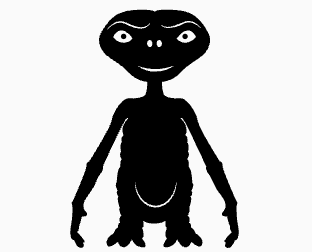
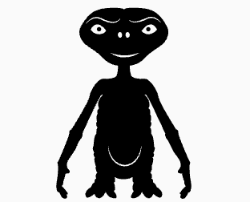

E.T. the Extra-Terrestrial (also known simply as E.T.) is a 1982 American science fiction film produced and directed by Steven Spielberg, and written by Melissa Mathison. It tells the story of Elliott, a boy who befriends an extraterrestrial, dubbed E.T., who is stranded on Earth. Along with his friends and family, Elliott must find a way to help E.T. return home while avoiding the government. E.T. premiered as the closing film of the 1982 Cannes Film Festival. It was released in the United States on June 11, 1982 and was an immediate blockbuster, surpassing Star Wars to become the highest-grossing film of all time—a record it held for eleven years until Jurassic Park, another Spielberg film, surpassed it. E.T. was widely acclaimed by critics and is regarded as one of the greatest films of all time. It received nine nominations at the 55th Academy Awards, including Best Picture, and won four awards: Best Original Score, Best Visual Effects, Best Sound and Best Sound Editing. The film also won five Saturn Awards and two Golden Globe Awards. It was re-released in 1985, and again in 2002, to celebrate its 20th anniversary, with altered shots, visual effects, and additional scenes. In 1994, the film was added to National Film Registry of the Library of Congress, being designated as "culturally, historically, or aesthetically significant."
 



Empire magazine called Elliott and E.T.'s flight to the forest "the most magical moment in cinema history". The image of them encircled by the moon is now the symbol for Spielberg's company Amblin Entertainment. The scene is a tribute to the 1951 Vittorio De Sica film Miracle in Milan, one of Spielberg's favorite films.